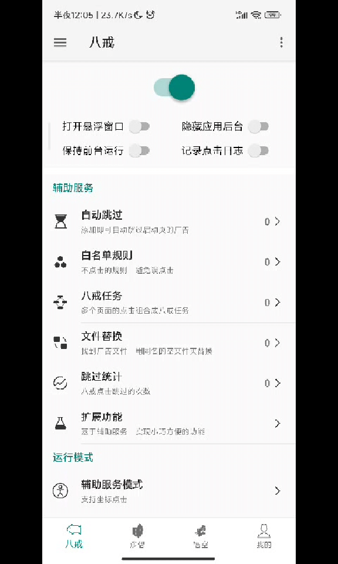
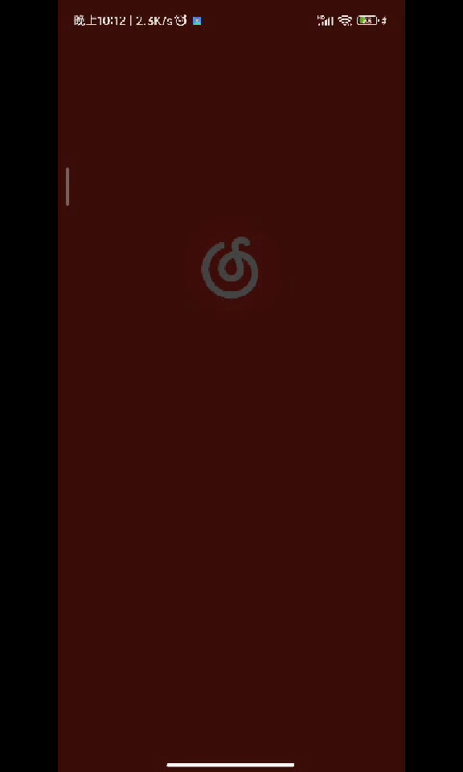
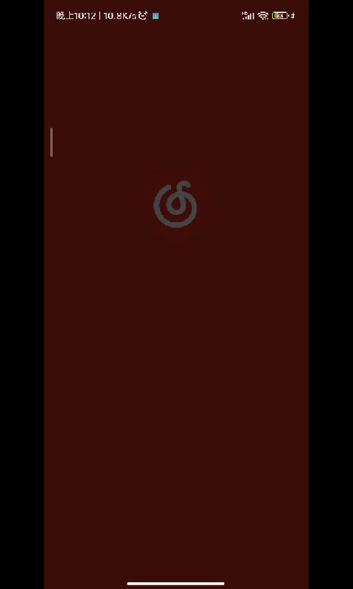

网易云音乐¶
注意
八戒 「无需root」
悟空 涉及Lsposed模块的调用，要在magisk下先安装Lsposed才可以使用。（自然是「需要root」的）
App Ops 可以用Shizuku在「无需root」权限情况下运行
规则¶
八戒¶
目的：自动点击「跳过」按钮
不用八戒转悟空方法的原因
作者提供了八戒转悟空的方法，但是经过测试，对网易云音乐效果不理想。八戒转悟空的策略是在程序进入某Activity后点击
相应ID对应的按钮，但是网易云音乐开屏广告就出现在com.netease.cloudmusic.activity.MainActivity上，开屏时会随机
延迟一段时间显示广告，悟空进入MainActivity检测不到按钮后会点击失败。而八戒提供了是否内容显示才操作？选项，
可以有效解决这个问题。
『网易云音乐』的大圣净化规则 app_task={
"p": "com.netease.cloudmusic",
"rules": [
{
"act": "com.netease.cloudmusic.activity.MainActivity",
"day": 4,
"isCommon": false,
"isNotSync": false,
"pkg": "com.netease.cloudmusic",
"rnd": 1,
"ruleType": 1111,
"steps": [
{
"at": 8,"bottomY": -1,"c": 1,"chk": 0,"clkChk": 0,"cmd": "",
"ct": 5,"d": 0,"ignId": "","ignTxt": "","isIgn": false,
"pRel": false,"it": 0,"leftX": -1,"lt": 1,"offset": 0,"oBtm": 0,
"oTop": 0,"op": false,"prs": false,"rightX": -1,"rndIt": 0,
"sd": "","slt": 0,"spd": 100,"sx0": -1,"sx1": -1,"sy0": -1,
"sy1": -1,"t": "跳过 5","topY": -1,"uv": true,"vId": "skipBtn",
"wv": "android.widget.TextView","x": -1,"xf": -1,"y": -1,"yf": -1
}
],
"taskType": 1111
}
]
}

悟空（屏蔽View）¶
目的：删除广告页面的广告显示
导入规则后的必要步骤
因为大圣净化的 bug，导入后规则的默认「目标页面」会由 com.netease.cloudmusic 变成
com.netease.cloudmusic.View。需要在导入规则后，手动进入规则并修改「目标页面」为 com.netease.cloudmusic。
『网易云音乐』的大圣净化解码 ad_none_rule={
"h": "",
"isEnable": false,
"n": "网易云音乐",
"p": "com.netease.cloudmusic",
"ruleStat": 1,
"rules": [
{
"ad": "com.netease.cloudmusic",
"ak": "[{\"cl\":0,\"ht\":0,\"id\":\"logoContainer\",\"pl\":0,\"s\":true,\"v\":\"android.widget.LinearLayout\"},
{\"cl\":0,\"ht\":0,\"id\":\"adCompatTag\",\"pl\":0,\"s\":true,\"v\":\"android.widget.TextView\"},
{\"cl\":0,\"ht\":0,\"id\":\"vipLogo;logo;ad_netease_icon\",\"pl\":0,\"s\":true,\"v\":\"android.widget.ImageView\"},
{\"cl\":0,\"ht\":0,\"id\":\"controlContainer;ad_container\",\"pl\":0,\"s\":true,\"v\":\"android.widget.FrameLayout\"}]",
"at": 8,
"d": 0
}
],
"v": "8.10.10"
}

App Ops¶
目的：阻止「摇一摇」跳转
- 找到
网易云音乐 - 设置 「传感器」 权限 为 「忽略」
使用效果¶
| 只用八戒 | 八戒 + 悟空（屏蔽View） |
|---|---|
|  |  |
关键词：com.netease.cloudmusic netease cloudmusic
作者：HenryZeng